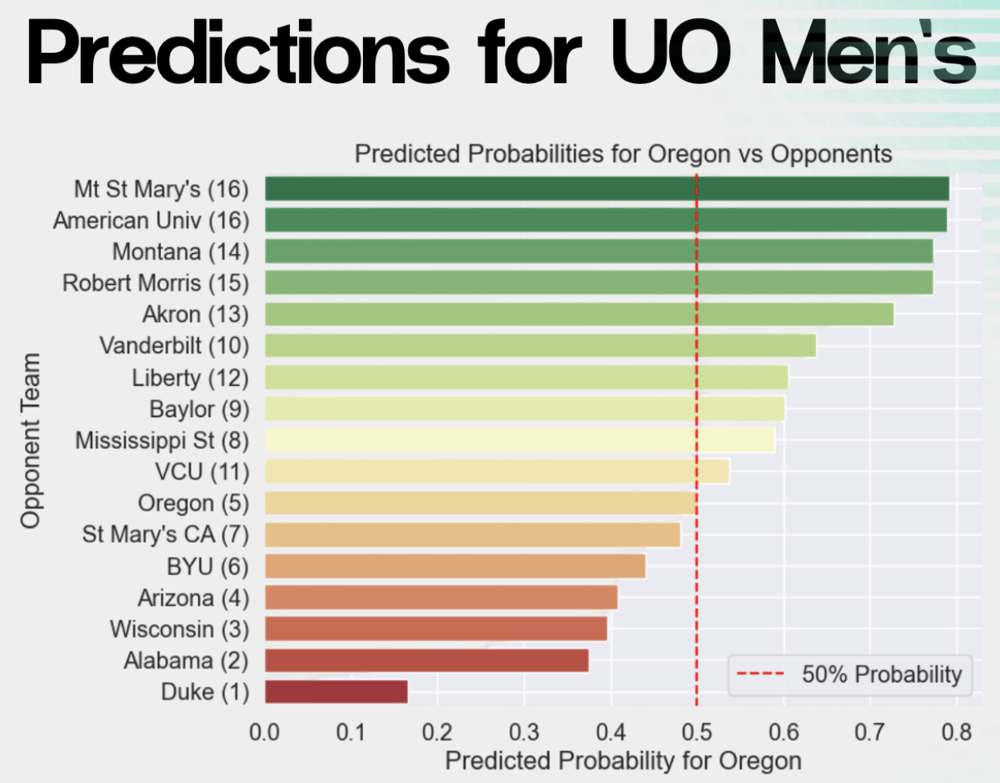

March Madness, the NCAA Men’s Basketball Tournament, is one of the most unpredictable and highly anticipated sporting events in the United States. Every year, millions of fans attempt to fill out the perfect bracket, yet the tournament’s single-elimination format and frequent upsets make accurate predictions incredibly challenging. As data analytics and machine learning continue to evolve, researchers and enthusiasts alike are exploring ways to use data-driven approaches to gain a competitive edge in predicting game outcomes.
This report explores the methodologies, datasets, and statistical models used in the analysis and prediction of March Madness 2025 game outcomes. It highlights key performance indicators (KPIs), such as team efficiency metrics, player statistics, seed histories. The goal is to assess the predictive power of various data sources and models, and to identify patterns or strategies that may enhance the accuracy of future predictions. By using historical data and current season metrics, this research could contribute to the growing field of sports analytics and offer insights into the ever-evolving art and science of bracket forecasting.
The primary objective of this research is to predict the win probability for every possible matchup in the season using data-driven methods.
Key Aspects
Prediction Metric:
The Brier score will be used to evaluate the accuracy of predictions.
Formula: Brier score = (Actual result - Forecast Probability)²
Data-Driven Questions
Differences in Men’s vs. Women’s Data:
Are there any notable statistical differences between the two datasets?
Coach Impact:
Does the coach’s experience and strategy significantly influence game outcomes?
Key Predictive Features:
What variables (e.g., team ranking, past performance, location) contribute most to accurate predictions?
This research aims to refine sports analytics models, identify key factors influencing game outcomes, and improve the accuracy of March Madness predictions.
Brier Score
Definition
The Brier Score (BS) is a metric used to measure the accuracy of probabilistic predictions. It quantifies the mean squared error between the predicted probability of an event occurring and the actual outcome.
Formula:
\[
BS = \frac{1}{N} \sum_{t=1}^{N} (f_t - o_t)^2
\] Where:
- ( N ) = Number of predictions
- ( f_t ) = Forecasted probability of the event occurring
- ( o_t ) = Actual outcome (1 if the event occurs, 0 if it does not)
Interpreting the Score
The Brier Score ranges from 0 to 1, where lower values indicate better predictive performance.
A perfect prediction results in a Brier Score of 0.
A completely incorrect prediction results in a Brier Score of 1.
A random guess (e.g., 50% probability for both outcomes) tends to yield a higher Brier Score, reflecting greater uncertainty.
Example Calculations
The table below illustrates how Brier Scores are computed for different matchups and prediction probabilities:
Game
Result
Predicted Team 1 Win Probability
Brier Score
1
Team 1 wins
0.5
0.25
2
Team 2 wins
0.5
0.25
1
Team 1 wins
0.6
0.16
2
Team 2 wins
0.4
0.16
1
Team 1 wins
1.0
0.00
2
Team 2 wins
0.0
0.00
Key Observations
A 50% probability (0.5) always results in a 0.25 Brier Score if the actual outcome is 1 or 0.
Predictions closer to 1 or 0 improve accuracy (e.g., a prediction of 1 for a winning team leads to a score of 0).
Lower scores indicate better forecasting accuracy and reflect well-calibrated models.
Use in March Madness Predictions
The Brier Score is particularly useful for evaluating models predicting game outcomes in March Madness:
- It helps assess how reliable and calibrated a model is in assigning probabilities.
- Comparing Brier Scores across different models allows researchers to determine the best approach for tournament predictions.
By minimizing the Brier Score, analysts can improve the precision of their March Madness forecasts and refine predictive strategies based on historical and real-time data.
Data Exploration
To develop an effective predictive model for March Madness 2025, various historical and real-time data sources are used. These datasets provide crucial insights into team performance, tournament trends, and external factors influencing game outcomes.
Key Data Categories
Team Seeds
Official NCAA tournament seedings assigned to teams each year.
Higher seeds generally indicate stronger teams but are not always predictive of outcomes.
Public Rankings
Team rankings from various sources such as the AP Poll, Coaches Poll, and advanced analytics models.
Helps assess how teams are perceived before and during the tournament.
Game Locations (City, State)
Information on where each game is played, including the city and state.
Certain teams may have a home-court advantage or perform better/worse in specific locations.
Coach Data
Historical performance of coaches in the regular season and tournament play.
Coaching strategies, experience, and records in close games and upsets.
Regular Season Game Outcomes and Scores
Win/loss records, final scores, and point differentials from the season.
Evaluating how teams perform against different types of opponents.
Team Conferences
The conference each team belongs to (e.g., Big Ten, SEC, ACC).
Certain conferences historically perform better in the tournament than others.
History of NCAA Tournament Games and Scores
Men’s tournament history since 1985
Data on all past games, including upsets, seed performance, and championship outcomes.
Women’s tournament history since 1998
Similar data on historical trends in the women’s tournament.
# Import team dataw_team = pd.read_csv('data/WTeams.csv')m_team = pd.read_csv('data/MTeams.csv')w_team.head()
TeamID
TeamName
0
3101
Abilene Chr
1
3102
Air Force
2
3103
Akron
3
3104
Alabama
4
3105
Alabama A&M
# Regular season resultsm_tourney_results = pd.read_csv('data/MNCAATourneyCompactResults.csv')w_tourney_results = pd.read_csv('data/WNCAATourneyCompactResults.csv')m_tourney_results.head()
Season
DayNum
WTeamID
WScore
LTeamID
LScore
WLoc
NumOT
0
1985
136
1116
63
1234
54
N
0
1
1985
136
1120
59
1345
58
N
0
2
1985
136
1207
68
1250
43
N
0
3
1985
136
1229
58
1425
55
N
0
4
1985
136
1242
49
1325
38
N
0
Lets explore score differences between men’s and women’s data.
Code
# Group by season and calculate the average scores for men's tournamentavg_scores_men = m_tourney_results.groupby('Season')[['WScore', 'LScore']].mean()# Group by season and calculate the average scores for women's tournamentavg_scores_women = w_tourney_results.groupby('Season')[['WScore', 'LScore']].mean()# Calculate the delta between winning and losing scores for both men's and women's tournamentsavg_scores_men['Delta'] = avg_scores_men['WScore'] - avg_scores_men['LScore']avg_scores_women['Delta'] = avg_scores_women['WScore'] - avg_scores_women['LScore']# Plot the delta scores for both men's and women's tournamentsplt.figure(figsize=(12, 6))plt.plot(avg_scores_men.index, avg_scores_men['Delta'], marker='o', linestyle='-', color='b', label='Men Score Delta')plt.plot(avg_scores_women.index, avg_scores_women['Delta'], marker='o', linestyle='-', color='r', label='Women Score Delta')plt.title('Delta Between Winning and Losing Scores Throughout the Years (Men vs Women)')plt.xlabel('Season')plt.ylabel('Score Delta')plt.legend()plt.grid(True)plt.show();
On this graph we can see that if women win they tend to win by a larger margin than men. This could be explained by a higher difference in class between women’s stronger and weaker teams.
Team-specific feature engineering
First, lets focus on exploring the team-specific features.
These features capture key team performance metrics and coaching factors that may influence game outcomes.
Key Features
Average Points Delta
Difference between points scored by the team and points allowed by opponents during the regular season.
Helps assess team dominance in scoring.
Win Rate During Regular Season
Percentage of games won by the team before the tournament.
A strong predictor of overall team strength.
Coach Fired During the Season (Flag)
Indicates whether the head coach was fired mid-season.
Sudden coaching changes can disrupt team performance.
Coach Consecutive Years with Team
Number of consecutive seasons the coach has been leading the team.
Long-tenured coaches may have more stable and successful programs.
Men’s or Women’s NCAA Division
Differentiates between the men’s and women’s tournaments.
Important for understanding historical trends and performance differences.
These features enhance predictive models by incorporating both team performance statistics and coaching stability factors, which may impact March Madness outcomes.
Now lets create a separate record for each season of each team
Code
# Create a separate record for each year for women teams since 1998w_teams_expanded = w_teams.loc[w_teams.index.repeat(2025-1998+1)]w_teams_expanded['Season'] = w_teams.apply(lambda row: list(range(1998, 2025+1)), axis=1).explode().values# Create a separate record for each year for men teams for every season the team is in D1m_teams_expanded = m_teams.loc[m_teams.index.repeat(m_teams['LastD1Season'] - m_teams['FirstD1Season'] +1)]m_teams_expanded['Season'] = m_teams.apply(lambda row: list(range(row['FirstD1Season'], row['LastD1Season'] +1)), axis=1).explode().values# Combine the expanded dataframesteams_expanded = pd.concat([m_teams_expanded, w_teams_expanded], axis=0)teams_expanded.head()
Add features corresponding to the regular season performance
Code
m_regular_season_results = pd.read_csv('data/MRegularSeasonCompactResults.csv')w_regular_season_results = pd.read_csv('data/WRegularSeasonCompactResults.csv')regular_season_results = pd.concat([m_regular_season_results, w_regular_season_results], axis=0)# Calculate average points difference for each team for each seasonregular_season_results['PointsDiff'] = regular_season_results['WScore'] - regular_season_results['LScore']points_diff_win = regular_season_results[['Season', 'WTeamID', 'PointsDiff']]points_diff_win.columns = ['Season', 'TeamID', 'PointsDiff']points_diff_lose = regular_season_results[['Season', 'LTeamID', 'PointsDiff']]points_diff_lose['PointsDiff'] =-points_diff_lose['PointsDiff']points_diff_lose.columns = ['Season', 'TeamID', 'PointsDiff']point_diff_total = pd.concat([points_diff_win, points_diff_lose], axis=0)point_diff_total['WinFlag'] = (point_diff_total['PointsDiff'] >0).astype(int)avg_stats = point_diff_total.groupby(by=['TeamID', 'Season'])[['PointsDiff', 'WinFlag']].mean().reset_index()avg_stats.columns = ['TeamID', 'Season', 'AvgPointsDiff', 'WinRate']# Merge with teams dataframeteams_expanded_2 = pd.merge(teams_expanded, avg_stats, on=('TeamID', 'Season'), how='left')teams_expanded_2.head()
/var/folders/8v/bx_f_4bj0klchryrhdgxty9h0000gn/T/ipykernel_86666/2144808946.py:13: SettingWithCopyWarning:
A value is trying to be set on a copy of a slice from a DataFrame.
Try using .loc[row_indexer,col_indexer] = value instead
See the caveats in the documentation: https://pandas.pydata.org/pandas-docs/stable/user_guide/indexing.html#returning-a-view-versus-a-copy
points_diff_lose['PointsDiff'] = -points_diff_lose['PointsDiff']
Season
Seed
TeamID
Region
Seed_num
TeamName
FirstD1Season
LastD1Season
gender
AvgPointsDiff
WinRate
0
1985
W01
1207
W
1
Georgetown
1985.0
2025.0
M
15.666667
0.925926
1
1985
W02
1210
W
2
Georgia Tech
1985.0
2025.0
M
9.354839
0.774194
2
1985
W03
1228
W
3
Illinois
1985.0
2025.0
M
10.870968
0.741935
3
1985
W04
1260
W
4
Loyola-Chicago
1985.0
2025.0
M
6.766667
0.833333
4
1985
W05
1374
W
5
SMU
1985.0
2025.0
M
8.666667
0.733333
Let’s explore the relationship between average points difference and win rate of the team.
The graph demonstrates a linear relationship between these properties.
It also represents an interesting property about the data. You could expect that the line would pass through the reference point because the team with an average 0 pts difference would should have a 0.5 win rate, but graph shows that these types of teams have a greater win rate.
This could be explained by the fact that the data samples presented contain only the teams that actually qualified for the playoffs. And this could imply that they are better then average in terms of win-rate to points difference relationship.
coach_df = pd.read_csv('data/MTeamCoaches.csv')# Add a column to indicate if the coach was fired during the seasoncoach_df['Fired_During_Season'] = (coach_df['LastDayNum'] !=154).astype(int)# Calculate the number of consecutive years of the coach at the teamcoach_df['ConsecutiveYears'] = coach_df.groupby(['TeamID', 'CoachName'])['Season'].rank(method='first').astype(int)coach_df = coach_df.groupby(['TeamID', 'Season']).agg( Fired_During_Season=('Fired_During_Season', 'max'), ConsecutiveYears=('ConsecutiveYears', 'first')).reset_index()teams_expanded_5 = pd.merge(teams_expanded_4, coach_df, on=('TeamID', 'Season'), how='left')teams_expanded_5['ExperienceLevel'] = teams_expanded_5['ConsecutiveYears'].apply(lambda x: 'NEW'if x <=2else'ENOUGH'if x <=4else'EXPERIENCED')teams_expanded_5.head()
Season
Seed
TeamID
Region
Seed_num
TeamName
FirstD1Season
LastD1Season
gender
AvgPointsDiff
WinRate
PublicRank
RankingSystem
ConfAbbrev
Description
Fired_During_Season
ConsecutiveYears
ExperienceLevel
0
1985
W01
1207
W
1
Georgetown
1985.0
2025.0
M
15.666667
0.925926
NaN
NaN
big_east
Big East Conference
0.0
1.0
NEW
1
1985
W02
1210
W
2
Georgia Tech
1985.0
2025.0
M
9.354839
0.774194
NaN
NaN
acc
Atlantic Coast Conference
0.0
1.0
NEW
2
1985
W03
1228
W
3
Illinois
1985.0
2025.0
M
10.870968
0.741935
NaN
NaN
big_ten
Big Ten Conference
0.0
1.0
NEW
3
1985
W04
1260
W
4
Loyola-Chicago
1985.0
2025.0
M
6.766667
0.833333
NaN
NaN
mw_city
Midwestern City Conference
0.0
1.0
NEW
4
1985
W05
1374
W
5
SMU
1985.0
2025.0
M
8.666667
0.733333
NaN
NaN
swc
Southwest Conference
0.0
1.0
NEW
Exploring the relationship between coach Experience Level and WinRate
Code
# Filter out rows with NaN values in 'ExperienceLevel' and 'WinRate'filtered_data = teams_expanded_5.dropna(subset=['ExperienceLevel', 'WinRate'])# Plot the win rate depending on coach experienceplt.figure(figsize=(12, 6))sns.boxplot(data=filtered_data, x='ExperienceLevel', y='WinRate', hue='ExperienceLevel')plt.title('Win Rate Depending on Coach Experience')plt.xlabel('Coach Experience Level')plt.ylabel('Win Rate')plt.grid(True)plt.show()
We can see that the more experienced coached tend to have a higher win rate.
Pairwise features
These features compare two teams in a given matchup, capturing differences in performance metrics to improve prediction accuracy.
Key Features
Difference Between Seeds
Measures the gap in tournament seeding between two teams.
Larger differences often indicate stronger favorites.
Difference Between Public Rankings
Compares rankings from sources such as AP Polls and Coaches Polls.
Helps assess how the teams are perceived in strength before the matchup.
Difference Between Point Differentials in Regular Season
Compares how much each team outscored or was outscored by opponents on average.
A higher differential suggests a stronger team.
By incorporating these pairwise comparisons, the model can evaluate relative strengths and weaknesses between two competing teams, refining the accuracy of game outcome predictions.
# Group by seed_diff and calculate the average targetgrouped_df = df.groupby(by=['seed_diff', 'gender'])['target'].mean().reset_index()# Create a boxplot for seed_diff vs average targetplt.figure(figsize=(12, 6))plt.plot(-grouped_df.query("gender == 'M'")['seed_diff'], grouped_df.query("gender == 'M'")['target'], marker='o', linestyle='-', color='b', label='Men Avg Seed Diff')plt.plot(-grouped_df.query("gender == 'W'")['seed_diff'], grouped_df.query("gender == 'W'")['target'], marker='o', linestyle='-', color='r', label='Women Avg Seed Diff')plt.title('Seed Difference vs Average Target')plt.legend()plt.xlabel('Seed Difference')plt.ylabel('Average Target')plt.grid(True)plt.show()
Stong dependency of the target base on the seed difference for both men and women can be noticed on the graph. And that makes sens: the higher the seed difference between the 1st team and the 2nd team - the more likely it is that the 1st team outclasses the 2nd one and wins the game.
Model application
Specifying features and target
features = ['seed_diff','rank_diff','win_rate_diff','points_diff_diff','consequtive_years_diff','Seed_num_1','Seed_num_2','PublicRank_1','PublicRank_2','WinRate_1','WinRate_2','AvgPointsDiff_1','AvgPointsDiff_2','ConsecutiveYears_1','ConsecutiveYears_2','gender','Fired_During_Season_1','Fired_During_Season_2','ExperienceLevel_1','ExperienceLevel_2']target ='target'
In a Jupyter environment, please rerun this cell to show the HTML representation or trust the notebook. On GitHub, the HTML representation is unable to render, please try loading this page with nbviewer.org.
importances = final_model.feature_importances_indices = np.argsort(importances)[::-1]plt.figure(figsize=(12, 8))plt.title("Feature Importances")sns.barplot(x=importances[indices], y=[features[i] for i in indices], palette='viridis')plt.xlabel('Importance')plt.ylabel('Feature')plt.show()
/var/folders/8v/bx_f_4bj0klchryrhdgxty9h0000gn/T/ipykernel_86666/1364103695.py:6: FutureWarning:
Passing `palette` without assigning `hue` is deprecated and will be removed in v0.14.0. Assign the `y` variable to `hue` and set `legend=False` for the same effect.
sns.barplot(x=importances[indices], y=[features[i] for i in indices], palette='viridis')
Insights:
Seed difference turned out to be the most impactful as expected
Gender feature didn’t turn out to impactfull. This may imply that the target behaviour between men and women is very similar.
Coach features didn’t turn out to be significantly important. All the coach dependencies could already be implicitly encoded in other features such as Seed Diff, Win Rate diff since the coach can have a impact on those.
Evaluation
Lets see how our model behaves throughout the years: predicting each year based on all the previous years data.
We can see that the target score is very noisy. This can be explained by 2 factors:
The dataset for each year consists of ~150 games (march madness games for men and women) which is very small.
The nature of the game has a certain degree of randomness which is almost impossible to predict based on the data available (ex. key player got an injury in training which negatively impacted the team performance.
Still, we achive a performance, comparable to the top kaggle solutions for prevous years.
Predictions for UO:

We can also look at the predictions for this season’s UO Men’s.
This graph actually shows that the model doesn’t solely base the predictions on the seed difference.
For example such teams as St Mary’s CA and BYU which are seeded lower that Oregon still have a higher chance of winning against Oregon :((.
Conclusion
The research successfully applied data-driven methods to predict March Madness game outcomes, yielding valuable insights and competitive performance.
Key Takeaways
Identified the Most Important Predictive Features
The analysis pinpointed key factors influencing game outcomes, helping refine predictive models.
Achieved Competitive Performance
The model’s accuracy was comparable to top-performing solutions from previous years, validating its effectiveness.
Potential Applications
The findings have practical implications for sports analytics, enabling better data-driven strategies for teams and analysts.
The model can be leveraged in the betting industry, where accurate predictions enhance decision-making for sportsbooks and bettors.
Overall, this report demonstrates the power of machine learning in sports analytics, contributing to more precise and insightful March Madness predictions.